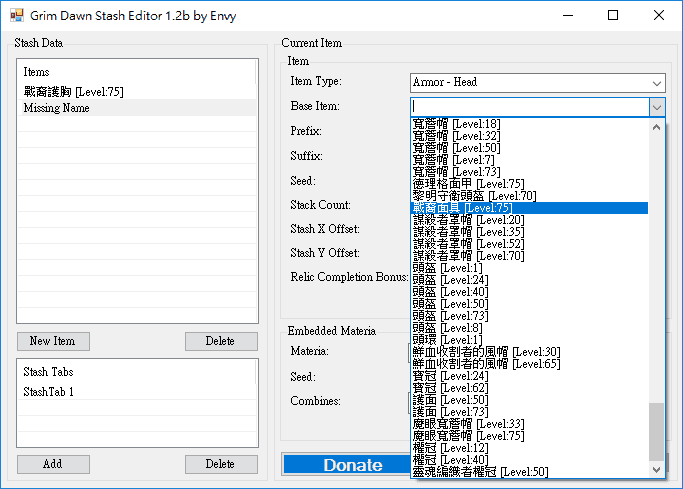

恐怖黎明
雖然是款好遊戲，但沒有前作《泰坦之旅》來得好，也沒有《流亡黯道》好玩。
但《恐怖黎明》可以單機進行遊戲，不用受累於網路連線品質，所以沒辦法順暢玩《流亡黯道》和《暗黑破壞神３》的話，還是慶幸有《恐怖黎明》可玩～
評薦
由於 Titan Quest 聲名大噪，不少台灣玩家、尤其換團隊接手後 D3RoS 2.4 已經變好玩卻還在酸 D3 的人，都很關注「恐怖黎明（Grim Dawn）」這款遊戲。
然而，除了畫質更棒以外，美術風格和音樂水準都縮水很多，尤其美術風格，恐怖黎明幾乎所有場景都是一樣風格，給人每張地圖都一樣的感覺，很快就看膩了，不像泰坦任務每個章節都能感受到不同的劇情氛圍。
但這其實非戰之罪，畢竟是款募資製作的遊戲[1]，沒辦法像手頭上有用不完資金似的好高騖遠，因此原本就規劃好要設計一款世界滅絕、風格殘酷、步調很快的 A.RPG。
優點
Grim Dawn 並不把重點放在內容上，而是競技上，所以有許多令人讚嘆不已的玩法。Diablo III 以推出更強的關卡打更強的神裝，吸引玩家持續參與遊戲；Path of Exile 把重點放在不斷更新技能架構，變動一下練法，好每年重新舉辦活動，讓玩家不停參與遊戲…但這些都換湯不換藥。現在 Grim Dawn 在「玩」的部分重新定義暗黑類型遊戲，做了一些去蕪存菁的設計，所以會有讓人批評的地方，但不能忽視也有進步的地方，那就是 A.RPG 中 Action 的部分。
一直以來，暗黑類型遊戲的重點都在裝備或練法，而不是技術，所以有些無腦的成分在：「練對了、穿對了，就橫行天下。」Grim Dawn 藉由降低 RPG 的成分，來獲取進一步的 Action 成分。RPG 成分太高，靠練功打寶就能變強，所以為了讓 Action 成分提高，縮小了 RPG 內容，這種做法正適合募資開發遊戲的團隊。但還不至於變成 R.ACT 就是了，練功打寶依然是 Grim Dawn 的最主要樂趣，只是不會讓你忘記還有 Action 的樂趣而已。最後表現出來的，就是 Grim Dawn 像街機版的暗黑，可以充分感受到操控技術帶來的成就感，具備 D3 與 PoE 所沒有的「快、狠、準」樂趣！
這 Action 樂趣，甚至體現在與遊戲世界跟 NPC 的互動上！Grim Dawn 以簡單明快不囉嗦的方式，提供玩家與遊戲互動的功能，只要你願意投入這款遊戲的細節，就能與 NPC 之間串起友情…或許，這才是 Grim Dawn 真正劇情的主軸：「故事本身沒什麼，你在這故事中活得怎樣，才是劇情、才是故事。」但開發團隊早就計畫要推資料片，所以劇情設下許多伏筆，太多交代不清的未解之謎，清讓玩家無法明顯感受到世界滅絕後可貴的是友情～
Grim Dawn 不夠史詩級龐大的內容，或許無法讓你滿意，但做為募資開發出來的遊戲，可以體會得到這團隊非常懂遊戲，能在有限的資源下狠狠衝擊暗黑類型的 A.RPG 玩法，令人驚嘆不已。真希望 Grim Dawn 能成功賺進大把鈔票，好讓這個團隊開發更完美的 Grim Dawn II。
缺點
目前最主要的負評是掉裝系統，故意讓玩家打不到你所練職業的套裝。或許目的是讓大家連線交流，但這類遊戲要好玩，就是玩家努力農怪，就能獲得好裝，感受遊戲帶來的回饋，如果要靠別人施捨才能獲得你想要的裝備變強，那就不好玩了。玩家想要的是：「我農得一身好裝，練得好強，所以和人連線讓大家看看我有多猛。」而不是「我打不到套裝穿，所以找人組隊提升掉裝機率。」
所以你不會像 Diablo 2、Torchlight 2、Path of Exile 練完一隻又一隻，享受不同 BUILD 的樂趣，在 Grim Dawn 練過一隻後，你只會想用修改的，看看不同 BUILD 是怎樣情況，而不會實際去練，因為你很清楚過程太折騰，所以練一隻就等於玩遍整個遊戲了～
另外就是多國語言的支援方式設計有問題，玩家遇到的許多 BUG 其實跟切換了遊戲的顯示語言有關，而且不是你下載的中文語系製作上有問題，純粹是遊戲本身的問題，設計成文字 UI 跟遊戲 Surface 是截然不同的層次，造成文字與畫面會有融合不起來的問題。優化也不夠好，顯示卡風扇狂轉、記憶體用量只增不減，程式會有當掉的問題，Titan Quest 剛上市時的慘況重演了一遍。
但現在批評這遊戲做得不夠好還太早，一切等資料片推出再說吧！D2、D3、PoE 誰不是改版後才擺脫罵名[2]？
彙整
．Grim Dawn - ARPG from Crate Entertainment …｛Steam｜GOG｝
．恐怖黎明 3DM 中文站 …｛恐怖黎明 3DM 论坛｝
．游侠网恐怖黎明专题 …｛恐怖黎明游侠 NETSHOW 论坛｝
．巴哈姆特 Grim Dawn 哈拉板
攻略、練法
．攻略匯集
．新手 BD 搭建方法思路解析
．凯恩世界全息地图
．虔诚祭坛位置图
．Grim Dawn 日本語 wiki
血荊棘
洞穴是隨機的，而且小地圖不會顯示出來。唯一線索：「入口一定在石頭上。」幸好幽暗盆地不算大，四處找找總算看到洞穴入口。
工具、修改
．Grim Dawn Item Database（百科全書）
．中文语言包
．地图全亮补丁
．Mod 数据修改方法
．小斧头修改器、GDTH.v6.10（人物修改器）、Grim Dawn Trainer（作弊程式）
．Grim Dawn Stash（倉庫管理與角色修改）
．Utilities and Resources
精選
心得
寫在前面
《恐怖黎明》這遊戲讓暗黑迷感動的，是因為畫面很「暗黑」。但也因為很像暗黑，所以當玩家抱著暗黑的心態來玩恐怖黎明，會對遊戲的角色、世界觀、甚至使用者介面產生格格不入的觀感。
這是因為恐怖黎明不是一款歌德式中世紀背景的遊戲，而是奇幻魔法蒸氣時代為背景的遊戲，只是這世界已經滅絕，人類只剩少數的倖存者。
魔法蒸氣為背景，從職業名稱可以看出來：
Soldier
Demolitionist
Occultist
Nightblade
Arcanist
Shaman
Soldier 是第一線交戰的士兵（古世紀叫 Knight 戰士），Demolitionist 是前線破壞設施的爆破部隊（充當古世紀的 Archer 弓箭手），Nightblade 是執行潛入任務與斬首行動的特種部隊（古世紀叫 Assassin 刺客），Occultist 是研究神秘學的學者（可視為古世紀宣揚宗教理念的 Cleric），Arcanist 是探究秘傳奧義的術士（古世紀叫 Sorcerer），Shaman 是信奉原始自然之力的巫醫（世界滅絕了出現薩滿並不奇怪），也就是說光看職業名稱，就知道已從古世紀進化到工業時代，所以跟 D2 是不同時空背景的遊戲。
由於中文翻譯也是站在暗黑的角度，命名為戰士、爆破者、神秘學者、夜刃、奧術師、薩滿，所以容易讓玩家以為這是古世紀背景的遊戲，然後看到遊戲有鎗砲、使用者介面的血條和法條樣式很 nimbus（既復古又充滿科技感的意思），就不免納悶這是甚麼鬼 XDDD
所以，希望玩這款遊戲時，不要因為長得像 Diablo 系列，就直接把它當暗黑的續作來玩。恐怖黎明是新的開端，一個發展出高度文明的魔法蒸氣時代已經滅絕了，不是蓬勃發展的，難道不覺得這樣的題材設定很新鮮嗎？扮演少數倖存者的你，將與同伴慢慢恢復秩序，
如果你沒玩過魔法蒸氣時代的遊戲居然走暗黑破壞神恐怖風格，就來嘗試看看《恐怖黎明》吧～
職業
玩家在 Lv.10 時可以選擇第二個職業，屆時會有不同稱號：
Commando （Soldier + Demolitionist）
Witchblade （Soldier + Occultist）
Blademaster （Soldier + Nightblade）
Battlemage （Soldier + Arcanist）
Warder （Soldier + Shaman）
Pyromancer （Demolitionist + Occultist）
Saboteur （Demolitionist + Nightblade）
Sorcerer （Demolitionist + Arcanist）
Elementalist（Demolitionist + Shaman）
Witch Hunter（Occultist + Nightblade）
Warlock （Occultist + Arcanist）
Conjurer （Occultist + Shaman）
Spellbreaker（Nightblade + Arcanist）
Trickster （Nightblade + Shaman）
Druid （Arcanist + Shaman）
點數
屬性：滿級 99 點，任務 6 點。
技能：滿級 237 點，任務 7 點。（Lv.1 升級 3 點，Lv.51 是 2，Lv.91 是 1。）
星座：共 55 點。
星盤
這部分請參考巴哈姆特 saigjiu 的文章，可下載他精心製作的表格：
．星座模擬器教學＋星座資料（更新 3F 星座技能）
蝙蝠 吸血雙牙
阿克隆的蠍尾 毒蠍釘刺
烏鴉
鐵錘
鐵砧 泰格之錘
牧羊人之杖 牧羊人之鈴
水手的指南針
刺客之刃 刺客標記
守護者之眼 守護者的凝視
鷹隼 鷹之俯衝
鰻魚
貓頭鷹
毒蛇
絞刑架
岔道
無人王座
疫鼠
海嘯 海嘯
小惡魔 虛化之火
大惡魔 火焰風暴
公牛 蠻牛衝撞
幽靈
鷹身女妖
狐狸
食屍鬼 食屍鬼之饑
樹神 女神的祝福
鷹
狼獾
烏龜 龜殼
獵豹
仙鶴
禿鷲
獵犬
蜘蛛
蜥蜴
學者之光
雄獅
豺狼
羅文的王冠 元素風暴
奧卡瑪的天平 權衡
溫迪戈 溫迪戈的標記
女獵手 撕裂
巨熊 重擊
刺客 憤怒之刃
法師 地獄裂隙、熔岩
秋豬 踐踏
寡婦 奧術炸彈、奧術標記
亡靈 亡者復甦、近戰攻擊
索拉爾的巫刃 恐怖烈焰
拜斯邁的枷鎖 拜斯邁的號令、尖牙與利爪、瘟疫吐息
暴風雨 危險風暴
鍛造者泰格 盾牆
寒冬之靈阿瑪托克 暴風雪
災難 腐臭毒池
巨蟹 元素屏障
蠍尾獅 酸霧
神聖守望者
戰爭使者 戰爭使者
海怪克拉肯
九頭蛇
納丹之劍
羅文的權杖
女狂戰
奧克萊恩之燈
持盾侍女
巨獸 巨人之血
死亡戰車 怨魂
水域守護者烏羅 淨化之水
收割之鐮
伊恩的沙漏 時間靜止
惡煞 腐化噴發
至高神之光 至高神之光
戰神奧萊隆 狂怒
曼海爾方尖碑 石膚
天堂之矛 天堂之矛
奧祖因的火炬 隕石雨
垂危之神 空虛之饑、吞噬、尖牙與利爪
生命之樹 治療之雨
狼神莫格卓根 莫格卓根的怒吼
盲聖 元素導引、靈魂燃燒、自爆
利維坦 漩渦
無名戰士 影武者
不像各職業的專精技能是很有系統地規劃在一塊，有數據可比對，就差不多知道該怎麼點，星盤是凌亂而分散的。想點一顆重要的星，可能要點好幾顆對你職業沒什麼幫助的星，所以上網找資料研究也不知道正確的點法。想精通星盤，紙上談兵是沒用的，自己反覆用修改器重洗點數去點一個個試看看，很快就知道怎麼點了！
裝備
白裝 一般裝備（Common） 普通難度時，攻守數值比屬性重要。
黃裝 附魔裝備（Magic） 會隨機產生前後兩種詞綴，附加兩項屬性。
綠裝 稀有裝備（Rare） 屬性是事先寫好的，但至少有三項屬性。
藍裝 史詩裝備（Epic） 附加更多屬性，且開始出現套裝。
紫裝 傳奇裝備（Legendary） Lv.50 開始掉落，比史詩裝備更強。
練法
攻擊招式點超過三招，結果技能點數不夠點輔助技能，就等於練錯，遊戲會很難進行下去。只點兩招攻擊招式，然後有一大堆輔助技能增加技能傷害與你的防禦，就不會練錯～
技能
Grim Dawn 和 Titan Quest 一樣，使用雙職業系統，但不太一樣的是，Titan Quest 適合搭配不同職業的主動技能通關，Grim Dawn 則適合主打單一職業的主動技能就好，雙修是為了其它職業的輔助技能。
至於技能該怎麼點，建議每種職業都練一次，你就知道該怎麼在各種職業中互補長短了！因為這遊戲的職業技能點法很簡單，挑兩個主動技能點滿，剩下的都點輔助技能。
主動技能沒幾個可點，所以很好挑，不會挑的話，一個延遲時間短的當基本招式、一個延遲時間長的當絕招。輔助技能看是要強化主動技能的威力、或是提升玩家的防禦能力，依練法而定。
Soldier 單手近戰 穿刺、流血
Demolitionist 遠距攻擊 火焰、燃燒
Occultist 輔助魔法 毒素、混亂、召喚
Nightblade 二刀近戰 冰冷、穿刺、毒素
Arcanist 攻擊魔法 元素、虛化（Aether）
Shaman 雙手近戰 閃電、召喚、流血、活力（Vitality）
比較難的是星盤的點法，這才是 Grim Dawn 的醍醐味～點錯了沒什麼影響，但點對了一整個強！
技能和星盤的點數可以找 NPC 重置，但職業等級不行。
屬性
屬性看想穿的裝備而定，需要注意的是，力量只提升血量與防禦，對攻擊沒幫助，想提升傷害輸出要點敏捷和智慧。
屬性無法重置，要用小斧頭或 GDTH 等工具。
裝備
裝備方面，由於遊戲設計成每隻角色能打到的套裝類型是固定的，所以你打不到想要的紫裝便註定永遠打不到。
開發者認為：「想要什麼裝備就與人連線。」既然找人要，那跟下載別人的倉庫來用有什麼兩樣？因此玩 Grim Dawn 不要去打裝，等級到了、屬性夠了，想穿什麼就上網找倉庫下載來穿，因為這跟找人連線要裝備穿還不是一樣道理？
因為無法真正隨機打到想要的裝備，所以不要把 Grim Dawn 當作純正的農怪打裝遊戲，當作更純正的 A.RPG，把等級練高、技能成型就夠了。
雖然很難打到符合你練法的紫裝，但黃裝和綠裝倒是比 Titan Quest 強，尤其特定技能 +1~+3 的屬性，彌補了可能穿不到紫裝、必須很長時間穿黃裝和綠裝的缺點。
修改
遊戲有完整的工具組讓玩家 Mod，例如用 Asset Manager 擷取遊戲資料檔，再用 DBREditor 修改資料檔中不合理的數據，就可以像 Diablo II 擷取 \data\global\excel\*.txt 修改資料，再下參數 -direct -txt 執行遊戲一樣，玩單機比玩 Battle.net 更有趣！怎樣練法才好玩，是可以由玩家掌握的。
開荒
神秘學者的「召喚地獄犬」是攻擊型，雖然被圍毆或打 BOSS 時會死，但死了再召喚就好，跟法師狂放攻擊技能比起來已經很省事了。因此沒有異議，一開始先點滿就對了！
但別忘了，神秘學者其實是補師，而他的補技「德里格之血」簡直是九陽神功，點滿後效果是：「先補 28% 的 HP，然後有 30 秒持續時間，每秒回 106 HP，並且附加 138 攻擊力，以及 152 毒素反傷。」因此第二個點滿，不但補自己也補寵物，還讓自己在 Act 1 有不遜於近戰的實力上前幫打！
神秘學者 10 → 召喚地獄犬 16
神秘學者 15 → 德里格之血 1
神秘學者 20 → 灰燼之爪 1 → 德里格之血 16 → 灰燼之爪 12
神秘學者 32 → 拜斯邁的羈絆 1 → 地獄之火 12
神秘學者 50 → 掌控 1 → 煉獄吐息 12
有了補技和攻擊型召喚物，就可以橫行天下！召喚物會打但不容易死，玩家只要躲在旁邊看戲很安全，而且會自補等於不死之身。另外一個優勢是，因為一開始全力專攻地獄犬，所以一路狂點職業專精，不但有高屬性穿裝備，HP 又足夠挨好幾頓打，無疑是開荒首選～
把地獄犬所有技能都點滿後，再點羈絆和烏鴉的元素抗性，最後轉攻薩滿的荊棘獸以及契約，就宣告成型了，既簡單又省點數，成型技能配點一覽：
召喚地獄犬 MAX 灰燼之爪 MAX 地獄之火 MAX 煉獄吐息 MAX
召喚荊棘獸 MAX 激勵咆哮 MAX
召喚原始之靈 1
召喚烏鴉 1 風暴之心 MAX
拜斯邁的羈絆 MAX 掌控 MAX
莫格卓根的契約 MAX 野性之心 MAX 橡樹皮 1
原始羈絆 MAX
德里格之血 MAX 守護者的軀體 1
用這隻開荒，一邊打裝賺錢，一邊熟悉遊戲，就不愁下一隻該練什麼了。
鍵盤
「鍵位設定」中有個「移動到」特別好用，設定為空白鍵，能以空白鍵取代滑鼠左鍵移動人物，遇到怪物再按滑鼠右鍵攻擊。曾滑鼠按到食指疼痛、三不五時復發的我，現在玩打寶遊戲完全沒負擔了～
手把
Grim Dawn 吸引我的是支援手把！這是我第一次用手把玩暗黑類型的遊戲～
雖說手把按鍵較少，但可以與鍵盤並存，因為兩者快捷欄是獨立開來的，各自保存不同的技能。因此被動技能設定在鍵盤，主動技能設定在手把，互相搭配使用。
手把對應的按鍵，可以在「鍵位設定」檢視與更改。但有其它不能更改的按法，以 Xbox 360 Controller for Windows 為例，按 Start 是選單，按 Back 是人物。人物介面中，按 RB 和 LB 可切換頁面，在技能頁面按 Y 可設定技能鍵。下壓右類比搖桿可以開啟滑鼠游標，用右類比搖桿來移動游標，按 LT 相當於滑鼠左鍵，RT 相當於滑鼠右鍵。比如說：將游標移到技能欄位上，按 RT 鍵可以挑選技能。將游標移到選項上，按 LT 鍵可以點擊。
漢化補丁
遊戲內建多國語言下載清單，裡面有簡體中文。
但官方提供的中文化，並未依照遊戲版本做更新，別說遊戲版本 1.0.0.5 Hotfix 2 時依然給的是舊版 v1.0.0.5/r1 Chinese 和 v1.0.0.5/r1 Chinese (Modified)，連 1.0.0.6 了還是 v1.0.0.5/r1 就扯到極點了！人物對話內容會出問題！（一星期後才看到中文 1.0.0.6）
因此玩恐怖黎明通常會自行下載「民間漢化」，不但更新速度快，而且製作精美，還用心潤色讓玩家清楚辨識不同職業，重點是翻譯得更好，不會有看了一頭霧水、不曉得在寫什麼的情況。
有新版中文化時，開板大大會編輯同一篇文章更新內容，且不只製作簡體中文化，還提供了繁體中文化版～
倉庫
Grim Dawn Stash Editor
非常好用的工具，可以產生裝備，然後儲存為倉庫檔！可惜資料只到 B31 Hotfix 1，沒有 1.0.0.2 後增加的物品。
下載主程式：http://www.cheatbook.de/trainer/grim-dawn-stash-editor.htm
由於原作者放棄更新，而遊戲的倉庫檔格式有變過，因此這個程式載入倉庫檔會有位置無法判別的問題（但儲存倉庫檔是沒問題的），因此大家改用另一款倉庫管理程式 Grim Dawn Stash 取代。但 Grim Dawn Stash 必須另外安裝 Java 執行環境，且必須 64 位元，否則載入資料庫時會溢出，所以個人還是用 Grim Dawn Stash Editor 產生裝備～

用法
首先按 New Item 新增一個空白物品，然後在 Item Type 選擇物品類型：
勳章 Accessories - Medals
項鏈 Accessories - Necklaces
戒指 Accessories - Rings
腰帶 Accessories - Waist
靴子 Armor - Feet
護手 Armor - Hands
頭盔 Armor - Head
護腿 Armor - Legs
神器 Armor - Relic
護肩 Armor - Shoulders
胸甲 Armor - Torso
單手斧 Weapons - Axe1H
單手錘 Weapons - Blunt1H
匕首 Weapons - Caster
副手 Weapons - Focus
單手遠程武器 Weapons - Gun1H
雙手遠程武器 Weapons - Gun2H
雙手斧 Weapons - Melee2H
盾牌 Weapons - Shields
單手劍 Weapons - Swords1H
再從 Base Item 選擇物品名稱，就變成想要的裝備了！
做好後按 Save 取代存檔位置的 transfer.gst，裝備就會出現在共享倉庫！
不想這麼輕鬆拿到好裝，但又不想老是打到其他職業的套裝，就把打到的藍裝或紫裝放到共享倉庫，然後在 Grim Dawn Stash Editor 用 Load Stash 載入 transfer.gst，再用 Base Item 選擇你想打到的裝備名稱，轉換為適合自己職業的穿的裝備，就當作自己打到的 XDDD
但載入倉庫檔會有物品位置錯亂、超出倉庫空間的問題，重新整理倉庫也沒用，必須將物品的 Stash X Offset 和 Stash Y Offset 都設為 0，全部會堆疊在最左上角。倉庫東西很多的話不建議載入！每個物品都會位置錯亂，一一設定很麻煩～
還有其它我沒用到的：Faction（靈魂綁定）、Crafting（設計圖）、Misc（道具）。
1.0.0.6 更新與資料中文化
由於 Grim Dawn Stash Editor 將資料與主程式獨立開來，因此可以隨時擴充資料，讓程式符合新版遊戲內容，所以我便追加了 1.0.0.2 到 1.0.0.6 的物品進去，但生產、設計圖和詞綴的資料不做更新；都可以直接拉紫裝出來了，誰還要設計圖和黃裝詞綴 XDDD
下載更新包：20160225A_01.7z
先下載 Grim Dawn Stash Editor，再將上面的更新與中文化包解壓後丟到 Grim Dawn Stash Editor 裡面，覆蓋原本的檔案。
你可以執行「繁體中文.bat」或「简体中文.bat」將資料中文化，中文是用 3DM 的民間漢化。但通常邊用 Grim Dawn Item Database 查裝備（英文的遊戲百科全書）、邊用 Grim Dawn Stash Editor 產生裝備，應該還是英文資料比較方便。可以執行「English.bat」還原為英文資料。
GDTH
如果小斧頭沒更新，就先用 GDTH：
在 Misc（第八頁）有 Reset skill points 可以洗技能點，Reset attribute points 可以洗屬性點。
在 Cbar 2（第二頁）有個 Run Speed，可以調整跑步速度。
在 NPCs（第九頁）有個 Monster SpawnRate，可以設定怪物倍率，最高 12 倍。
在 Cbar 1（第一頁）的 Set infinte Health 可以無限生命，Set infinte Energy 可以無限魔法，available attrubute、skill points、avail / unl. devotion points 分別增加屬性點、技能點、星座點，set iron 可以增加金錢。
在 Skills（第四頁）的 Remove cooldown 可以瞬間冷卻，在 Cbar 2（第二頁）的 Atk Speed 可以調整攻速。